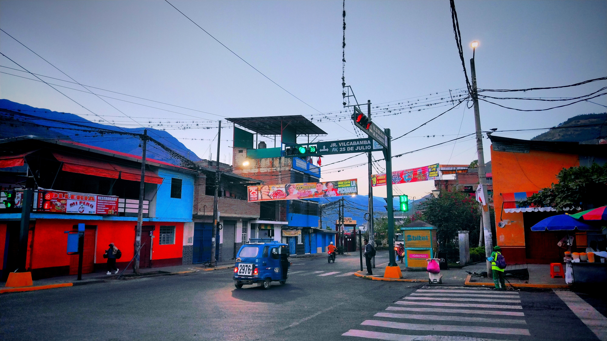
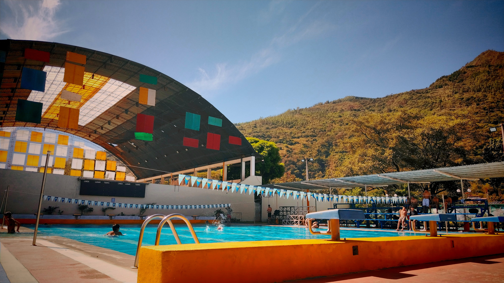
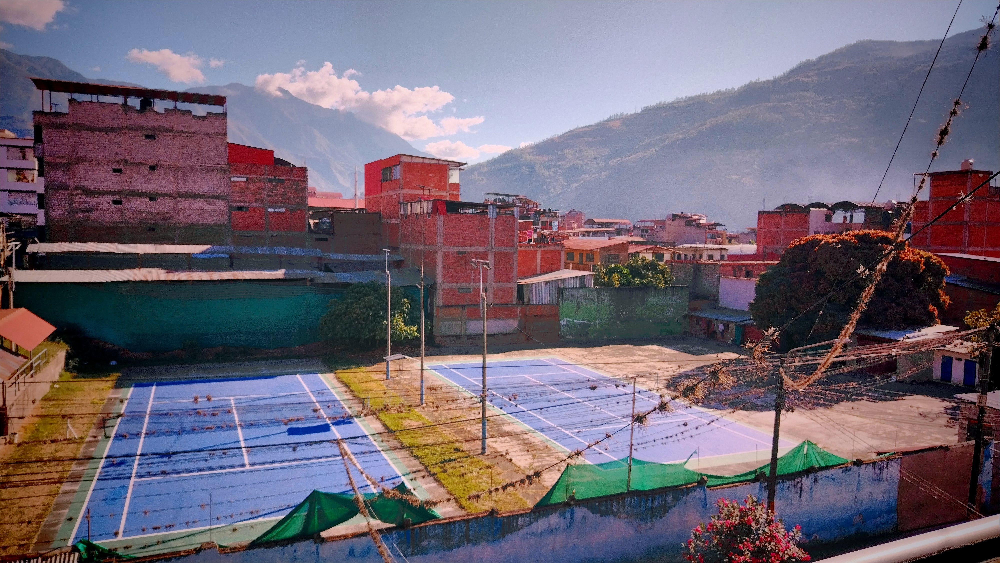
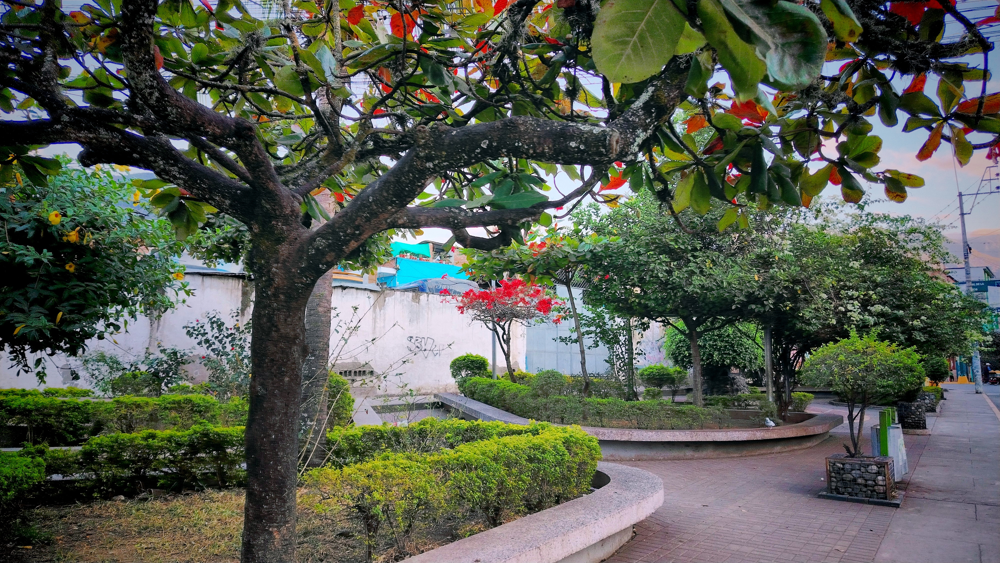
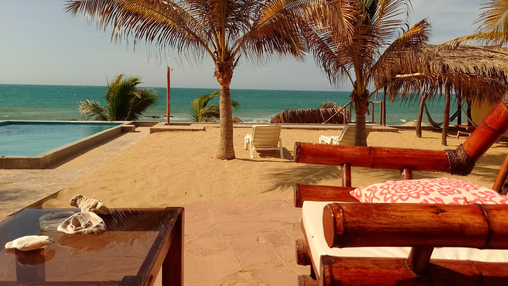

Fotografía
Una mirada visual al mundo a través de mi lente. Paisajes, retratos y detalles que capturan momentos únicos desde mi perspectiva.

Amanecer en la Calle.
Foto tomada en la interseccion Jr.Vilcabamba con Av.25 de julio. 23 de julio de 2025

Eterno Verano.
Foto tomada en la Piscina Municipal de Santa Ana. 20 de julio de 2025.

Club.
Foto aerea del Club tennis de Quillabamba. 23 de julio de 2025.

Parque al amanecer.
Foto tomada en el Parque de los bomberos en Quillabamba. 23 de julio de 2025

Vacaciones.
Foto tomada en Punta Sal. 9 de enero de 2025